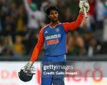
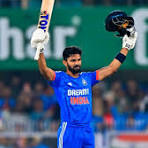

INDIA : A CRICKETING POWERHOUSE
NAME:MANAS SINGH
ROLL NO: LCS2026027
BRANCH: CS
India has a population of around 1.4 billion and has been producing many talented cricketers from the past decade.
Every player brings in a different skillset and manages to leave a mark at the international level.From batsmen to bowlers evryone is becoming better in terms of stamina , skills
and cricketing IQ.
Because of this it has become a headache now for the selectors to decide the best playing XI. Even after so many discussions among experienced former cricketers creating a squad that does justice to every talented youngster , is a challenge.
A selector needs to consider various factors before confirming the selection of a player .
Currently, the number 4 position has been the topic of discussion among the fans and mainstream media.The Number 4 batting position is highly demanding. The top 3 responsibilities for this role are:
- Stabilize the innings
- Tackle the spinners .
- Accelerate at the death
Lets say we have to compare two contenders for the number 4 spot - Tilak Varma and Ruturaj Gaikwad.


| Point of comparison | Ruturaj Gaikwad | Tilak Varma |
|---|---|---|
| Strike Rate | Better vs spin | Better vs pace |
| Footwork and Technicality | Conventional shots | Innovative shots |
| Average | Better in ODI | Better in T20 |
While Ruturaj brings stability and technicality, Tilak has a better strike rate.Both have their own approach towards the game and have proven to be an asset for the team. So, the selectors should make a call depending on the match situation and the pitch conditions.As cricket continues to evolve, the Indian team is lucky to have such a strong bench strength. Ruturaj has already proven his leadership by captaining the team to an Asian Games Gold, while Tilak has also given unforgettable performances in the Asia cup and Asian Games It will be very exciting to see how both of these young stars shape the future of Indian cricket in the coming years.
To sum it up, the two cant be compared directly. Ruturaj Gaikwad is the perfect anchor who can build a long innings and rotate the strike well, while Tilak Varma can increase the run rate by his clean and powerful striking. Watching them grow and pulverise international bowlers is a delight for every Indian cricket fan.